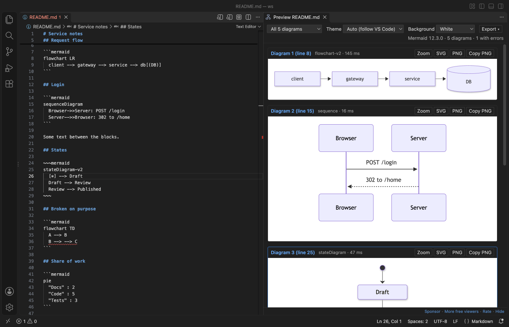

Як переглянути діаграми Mermaid у VS Code
У VS Code немає власного перегляду Mermaid. Встановіть безкоштовний Mermaid Viewer, відкрийте файл .mmd або .mermaid і клацніть значок перегляду вгорі праворуч у редакторі, і діаграма змінюватиметься разом із вашим текстом. Для файлу Markdown перегляд показує всі блоки mermaid. Mermaid 12.3.0 входить до розширення, тож перегляд і експорт у PNG чи SVG безкоштовні й працюють офлайн без входу. Zovo Pro (19 USD один раз) додає експорт у PDF, експорт усіх діаграм робочої області та експорт під час збереження, з 3 безкоштовними запусками кожен.
Безкоштовно, ліцензія MIT. ID розширення zovo.mermaid-viewer, версія 0.3.5.
Цей посібник доступний також іншими мовами: English · Français · Italiano · Português (Brasil) · Polski · 简体中文 · Čeština · हिन्दी · Bahasa Indonesia · 한국어 · Nederlands · Русский · Svenska · ไทย · Türkçe · Tiếng Việt · 繁體中文 · Deutsch · Español · 日本語

Як це зробити у VS Code
- Встановіть Mermaid Viewer з Marketplace або натисніть Ctrl+P (Cmd+P на macOS) і виконайте
ext install zovo.mermaid-viewer. - Відкрийте файл
.mmdабо.mermaidі клацніть значок перегляду в заголовку редактора або натисніть Ctrl+K V (Cmd+K V на macOS). Можна також виконати «Mermaid Viewer: Open Diagram Editor (Text + Live Preview)» з Command Palette. - Для файлу Markdown із блоками
```mermaidклацніть той самий значок перегляду. Перегляд показує всі діаграми, кожну з власним рядком помилки й власними кнопками експорту. - Клацніть «Edit diagram» над блоком у файлі Markdown, щоб редагувати його поруч із живим переглядом. Збережіть, і текст повернеться у свій блок.
- Прокручуйте коліщатко, щоб масштабувати в точці вказівника, і перетягуйте, щоб зсунути вид. Fit і 100% є на панелі інструментів.
- Натисніть Export і виберіть Save PNG (1x, 2x або 4x чи точна ширина або висота), Save SVG, Copy PNG або Copy SVG code.
Що безкоштовно і що додає Zovo Pro
Живий перегляд, редактор діаграм, Edit diagram для блоків Markdown, автодоповнення, підкреслення помилок, 15 шаблонів, структура Mermaid Diagrams, а також експорт і копіювання PNG і SVG безкоштовні. Немає облікового запису, входу й AI.
Export All Diagrams in Workspace записує кожну діаграму з усіх файлів .mmd, .mermaid і Markdown у папці в SVG, PNG або обидва формати в mermaid-export/, зберігаючи ту саму структуру папок, що й у вихідних файлів. Діаграми, які не вдалося намалювати, перелічено в кінці. Коли документація змінюється, не треба відкривати й експортувати кожну діаграму вручну.
Як запустити Export All Diagrams in Workspace (Zovo Pro)
- Відкрийте папку у VS Code. Виконайте «Mermaid Viewer: Export All Diagrams in Workspace (SVG/PNG) (Pro)» з Command Palette або натисніть «Export All Diagrams in Workspace» у рядку «Pro tools» під панеллю інструментів перегляду.
- Виберіть SVG, PNG або SVG and PNG.
- Залиште стандартну папку
mermaid-export(налаштуванняmermaidViewer.exportFolder) або виберіть «Choose a folder…». Запуск зараховується лише тоді, коли файли записано. Escape його не витрачає.
Export All Diagrams in Workspace можна запустити на вашому комп’ютері 3 рази безкоштовно, після цього розширення попросить ліцензію. Жодних спливних вікон і жодного зворотного відліку.
Zovo Pro коштує 19 USD, оплата одноразова. Це не підписка. Ліцензія вмикає Pro-інструменти в усіх розширеннях Zovo, а не лише в Mermaid Viewer. Після оплати карткою (Stripe) ключ ліцензії з’явиться на наступній сторінці. У VS Code виконайте «Zovo Pro: Enter Zovo Pro license key» з Command Palette і вставте ключ. Ключ перевіряється на вашому комп’ютері, без запиту до мережі. Якщо ви платите через GitHub Sponsors, виберіть рівень "$19 one time", а потім виконайте «Zovo Pro: I already paid: unlock with GitHub Sponsors».
Ліцензія для команди з 5 осіб коштує 59 USD один раз (оплата карткою). Усі правила та всі Pro-інструменти описано на сторінці Zovo Pro (англійською).
Як встановити в Cursor, Windsurf або VSCodium
- Відкрийте панель Extensions клавішами Ctrl+Shift+X (Cmd+Shift+X на macOS).
- Знайдіть
zovo.mermaid-viewerі натисніть Install. Cursor, Windsurf і VSCodium встановлюють розширення з Open VSX, де це розширення опубліковано якzovo/mermaid-viewer. - Якщо у вашому редакторі немає каталогу розширень, завантажте файл .vsix зі сторінки Open VSX і виконайте «Extensions: Install from VSIX...».
- Далі все працює так само, як у VS Code.
Що вміє Mermaid Viewer
- Flowchart, sequence, class, state, ER, Gantt, pie, gitGraph, mindmap, timeline, sankey, XY chart, block, C4, architecture та інші типи, які знає Mermaid 12.3.0.
- Помилки підкреслено в їхньому рядку й показано на панелі Problems. Остання правильна діаграма лишається на екрані, а один зламаний блок у файлі Markdown не ховає інші.
- Масштаб від 1 % до 3200 % у точці вказівника, з панорамуванням і масштабуванням жестами на тачпаді.
- Експорт SVG із простими текстовими підписами для вікі Azure DevOps і GitHub.
- Тло в кольорі редактора, біле, прозоре або власного кольору, яке використовується й під час експорту.
Чого розширення не робить
- Розширення не додає діаграми у вбудований перегляд Markdown у VS Code. Воно відкриває власну панель перегляду.
- Формули в підписах (
$$...$$) можуть виглядати неправильно, бо шрифти KaTeX не входять до розширення. - Набори значків, які Mermaid завантажує з інтернету, не завантажуються. Вбудовані значки працюють.
- Діаграми понад 500 000 символів або 2000 зв’язків не малюються, доки ви не збільшите ліміт (налаштування
mermaidViewer.maxTextSizeіmermaidViewer.maxEdges). - Малювання, яке триває понад 10 секунд, зупиняється (налаштування
mermaidViewer.renderTimeoutSeconds).
Часті запитання
Це безкоштовно?
Перегляд, редактор, редагування блоків Markdown та експорт у PNG і SVG безкоштовні. Pro-інструменти (експорт у PDF, Export All Diagrams in Workspace і Export on Save) мають по 3 безкоштовні запуски. Після цього потрібен Zovo Pro, 19 USD один раз для всіх розширень Zovo.
Чому VS Code не показує мій блок mermaid у перегляді Markdown?
Вбудований перегляд Markdown у VS Code не малює Mermaid. Mermaid Viewer відкриває для файлу Markdown власну панель перегляду з масштабуванням і експортом для кожної діаграми.
Чи потрібні обліковий запис або інтернет?
Ні. Mermaid 12.3.0 входить до розширення, входу й AI немає, а перегляд блокує всі мережеві запити.
Чи працює це в Cursor?
Так. Розширення є на Open VSX як zovo/mermaid-viewer, тож його можна встановити в Cursor, Windsurf і VSCodium.
Докладніше
В англійській версії посібника більше подробиць та інші варіанти. Усі функції й налаштування описано на сторінці Mermaid Viewer (англійською).
Факти перевірено 13 листопада 2026 року за поточною версією в Marketplace.